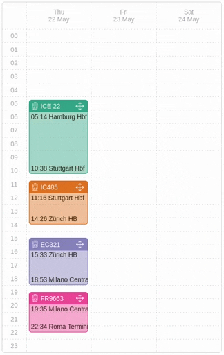

I mean, it already starts when planning such a trip. For a long train trip I have loads of other criteria beyond just pure travel time and number of transfers. I want to travel comfortably (whatever that means for me personally). I want enough breaks, and I want buffers before important connections that I don’t want to miss. I want an interesting route, perhaps nearby some places I haven’t visited before. And it would be nice to have some time to stop at some of them and spend some hours there. Because, of course, with such trips, the journey itself is part of the reward.
Let’s have a look at some examples, three different itineraries for getting from Berlin to Naples:
Stressful, but done in a day
More relaxed and time to explore Verona
Visiting a friend in Zurich
The first itinerary is pretty tight, with transfers in Munich, Verona and Rome; stressful day, yes, but also all done in a day. The second one takes the same route but is more relaxed, leaving some time to explore Verona. The third itinerary takes a different route, through Zurich and Milan, not doable in one day, so it's less “optimal”. But it might be just the right one for me, giving me the chance to visit a friend in Zurich along the way. All three are valid itineraries, suitable for different people with different needs.
Problem is, now I am sitting in front of any one of those online train trip planners with one of those classic from/to/when forms and want it to give me the itinerary that suits me. But how? I can barely change anything. Only thing I can do is play around with the departure time and the time spent at transfer stops. And then press the search button and hope that the trip I want has not been optimised away by the routing algorithm. And so I end up where I have been so many times before, with a dozen open browser tabs in front of me, manually piecing together my trip. So frustrating.
With the Trans Europe Planner we want to try out a new way of planning train trips. An explorative user interface, that invites the user to try out different options, to move things around, to get a feeling for how the best itinerary for them could look like.
Geographic exploration
First up is geographic exploration – where exactly do I want to go? Because of course oftentimes we don’t have an exact destination in mind, but rather a vague-ish idea like “I want to go to the French Riviera” or “I want to visit the alps”. When clicking on one of the possible destinations on the map, I am shown the number of transfers necessary to reach this destination and can choose to see the different travel routes that are possible.
Time exploration
When clicking on one of those routes, a calendar view opens, containing an automatically generated itinerary along the selected route. This itinerary can now be changed using a simple drag & drop mechanism. Simply grab one of the connections (for example the train from Milan to Rome) and start dragging. Horizontal lines appear that indicate alternative connections from Milan to Rome. Then drag the current connection to one of those alternatives, drop it and voilá, the itinerary has been updated. This can now be repeated as necessary, dragging and dropping connections around, trying things out, changing the itinerary until it feels just right.
Trying it out
Try it out yourself at https://trans-europe-planner.eu. But caution, the Trans Europe Planner is still a prototype and the train connection data is kind of outdated. More details regarding the current state of development can always be found here in the blog.